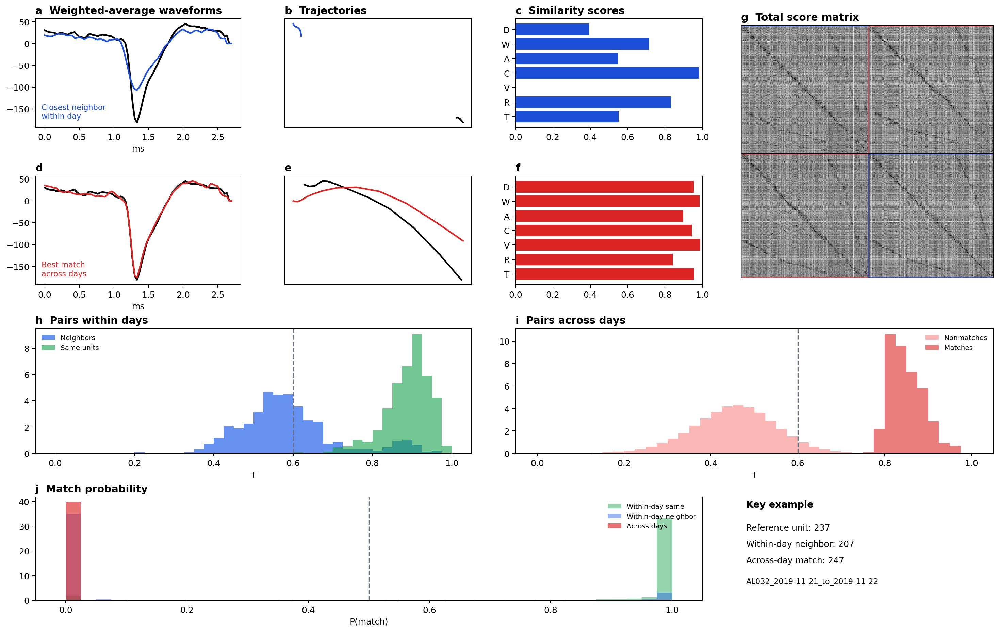
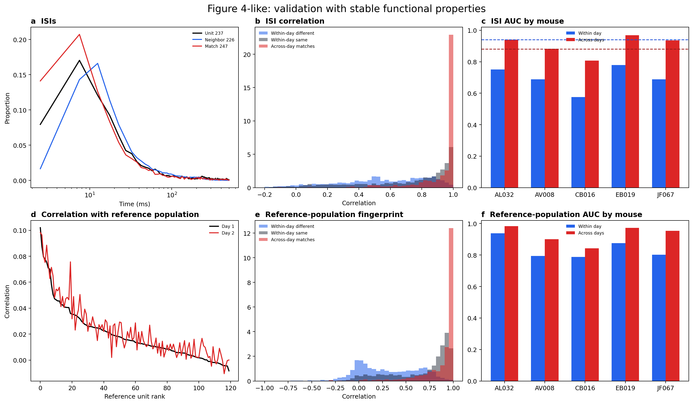
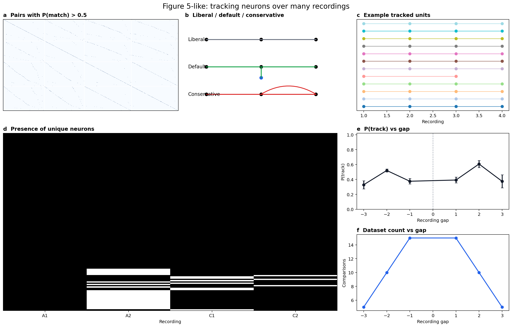

Tracking neurons across days with high-density probes
Local full-data UnitMatch report generated 2026-03-25
Abstract. This local report packages a full-data UnitMatch run across the bundled recordings in a paper-like format. It focuses on the classifier-construction, functional-validation, and multi-recording tracking results requested for review. The local bundle supports waveform-based matching, ISI validation, and a spike-time-derived reference-population analog, but not the natural-image-response validation dataset used in the paper.
Key Summary
Sessions processed: 20
Pairs processed: 10
Mice: AL032, AV008, CB016, EB019, JF067
Acute mean tracked fraction: 40.7%
Chronic mean tracked fraction: 46.3%
Within-day false-positive median: 0.19%
Within-day false-negative median: 9.25%
ISI across-day AUC mean: 0.906
Reference-population across-day AUC mean: 0.930
Results
Computing similarity scores and setting up the classifier

Figure 3-like local analog built from the AL032 consecutive-day example pair.
Validation with stable functional properties

Figure 4-like local analog using the functional fingerprints supported by the bundled spike-time data.
Tracking neurons over many recordings

Figure 5-like local analog using the saved multi-session classic runs across the bundled mice.